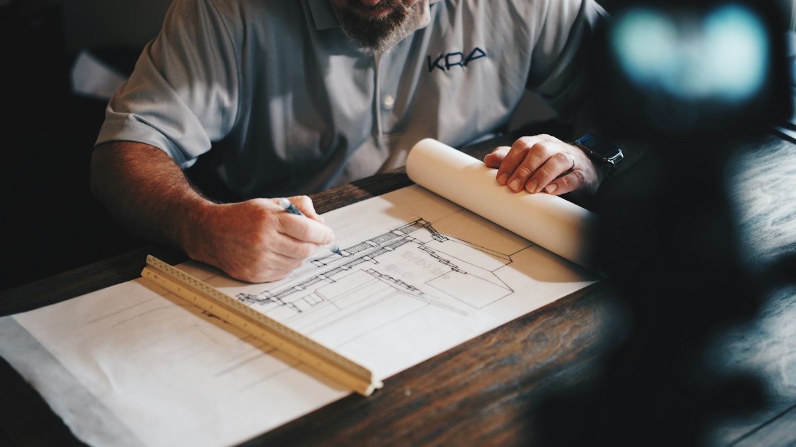
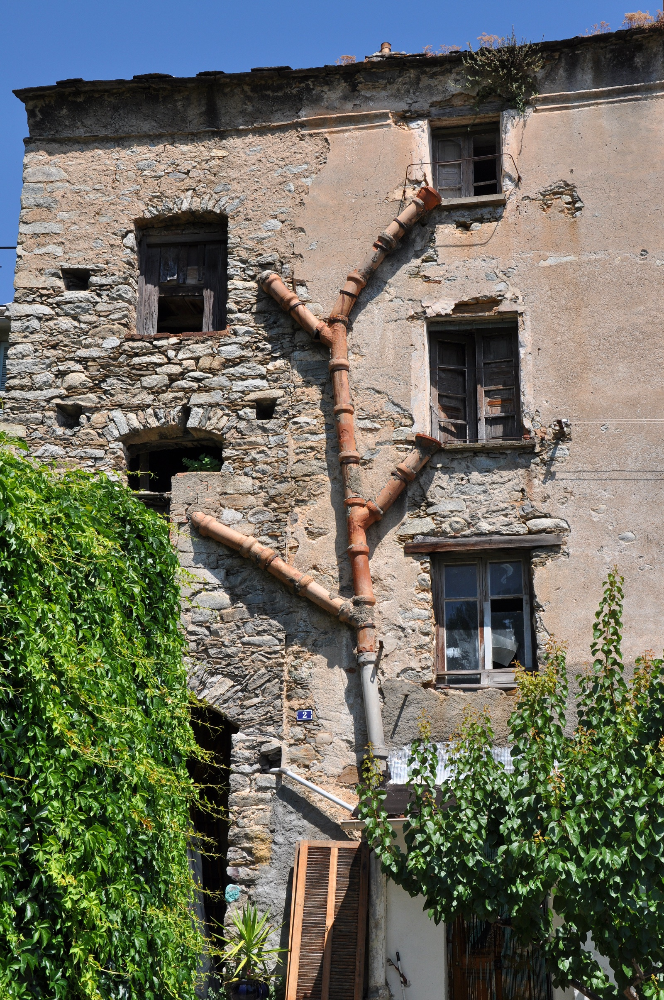
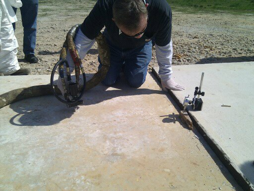

Structural Underpinning Systems
Helical & Push Piering in Olympia, WA
Transfer structural home loads down to competent bedrock and stable glacial till.
Engineered Pier Underpinning for Settled Footings
When weak or moisture-saturated soils beneath your home can no longer support its weight, your foundation footings settle unevenly. We install heavy-gauge galvanized steel push piers and helical screw anchors driven hydraulically into competent load-bearing geological formations. Once seated, synchronized hydraulic lifting cylinders gently elevate the home back toward its original level elevation, permanently securing your structure against future downward movement.
Service Areas & Local Coverage
Contractors in our network are registered, bonded and insured in Washington, and provide helical & push piering across Olympia and surrounding communities. View local coverage & municipal permit guidelines →

Why choose us for Helical & Push Piering?
Engineered Load Verification
Hydraulic pressure gauges verify the exact load-bearing tonnage capacity of every individual pier installed.
Corrosion-Resistant Galvanization
Hot-dip galvanized steel is the standard specified for our region's wet, mildly acidic soils; ask your contractor for the coating spec and the manufacturer's durability data for your site.
Related Guides & Articles
How Much Does Foundation Repair Cost in Olympia, WA? (2026 Guide)
Realistic pricing breakdown for foundation repair in Olympia, WA: pier installation costs, crack injection, leveling, and structural permits.
Read guide →7 Critical Signs of Foundation Settlement in Pacific Northwest Homes
Recognize early structural red flags before minor soil settling turns into catastrophic foundation failure in Olympia homes.
Read guide →Crawl Space Encapsulation Cost & Moisture Control in Olympia, WA
Detailed breakdown of crawl space cleanouts, vapor barrier encapsulation, smart sump pumps, and commercial dehumidification in Western WA.
Read guide →
How deep do piers go in Olympia?
Most of Thurston County sits on Vashon glacial till — dense, over-consolidated sediment left by the last ice sheet — under a variable cap of outwash sand, silt and fill. That geology is the single biggest driver of what piering costs here.
In practice, piers in this area typically reach competent bearing somewhere between about 12 and 30 feet. Shallower depths are common on the till plateaus east of I-5 around Lacey and Hawks Prairie. Deeper runs show up on filled or alluvial ground near Budd Inlet, along the Deschutes corridor, and on the cut-and-fill lots that stair-step down toward the water.
A pier is driven to refusal — a measured hydraulic pressure or installation torque that corresponds to a known load capacity — not to a depth somebody guessed from the driveway. That distinction matters commercially: a bid that quotes a flat per-pier price without any soil information is quoting a number it cannot actually stand behind.
Helical piers or push piers — which one applies to your house?
These are not interchangeable, and a contractor who only ever installs one of them will tend to recommend that one.
Resistance (push) piers
Hydraulically pressed into the ground using the weight of the building itself as the reaction force. Because the structure provides the resistance, push piers suit heavier homes — full masonry, two storeys, poured foundation walls. Each pier is effectively load-tested during installation, because the pressure it takes to advance it is measured against a known structural weight.
Helical piers
Screwed in with a hydraulic torque motor, like a giant screw anchor. Capacity is calculated from installation torque rather than from building weight, which makes them the right answer for lighter structures — additions, decks, porch columns, crawl-space-over-post-and-pier construction — where there simply isn't enough dead load to press a push pier to refusal.
A useful rule of thumb: light structure or new construction leans helical; heavy existing structure leans push. Sites where both are viable usually come down to access and cost.
What actually happens during installation
Knowing the sequence makes it much easier to tell a thorough contractor from a fast one.
- Elevation survey. A manometer or laser level maps the floor across the whole footprint, establishing how much the structure has dropped and where. This is the baseline everything else is measured against — if nobody does this first, there is no way to state how much lift was achieved.
- Excavation. Compact pits are dug against the footing at each pier location, typically around 3×3 feet. Landscaping immediately at the foundation will be disturbed; beds a few feet out usually survive.
- Footing preparation. The footing is cleaned and, where needed, notched so the bracket seats squarely against sound concrete.
- Driving. Pier sections are advanced until refusal pressure or design torque is reached. Depth is recorded per pier — ask for this log.
- Lift and transfer. Jacks are manifolded together so load transfers gradually and evenly rather than at one point.
- Backfill and documentation. Pits are closed and you receive the depth and pressure record for each pier.
How much lift should you expect?
This is where expectations most often go wrong. The honest answer is that stabilisation is the guaranteed outcome; lift is a best effort.
Recovering some elevation is usually possible, and doors and windows frequently improve noticeably. But a full return to original elevation is not always achievable and is not always desirable — a house that has been settled for forty years has plaster, tile, plumbing and framing that have all adjusted to the new position. Forcing it all the way back can open new cracks upstairs while closing old ones downstairs.
A good contractor will tell you this before the work, give a realistic range in inches, and put the stabilisation guarantee in writing separately from any lift expectation. Be sceptical of anyone promising the house will go back exactly level.
Permits, engineering and inspection in Thurston County
Structural underpinning is permitted work. In the City of Olympia and in unincorporated Thurston County, pier installation generally requires a building permit and, in most cases, a stamped design or engineer's letter. Properties inside mapped geologically hazardous or critical areas — which covers a lot of the steeper ground around Cooper Point and the inlet shoreline — can attract additional review.
Two practical implications. First, permit and engineering fees are a real line item; a quote that omits them entirely is probably incomplete rather than cheap. Second, the permit and final inspection are what give you a documented, disclosable repair when you later sell — which is worth considerably more at closing than an undocumented cash job.
Questions worth asking before you sign
- What depth do you expect, and what will you do if you hit refusal much shallower or deeper than that?
- Is the per-pier price fixed, or does it change with depth? Get the adder in writing.
- Who stamps the engineering, and is that cost inside your number?
- What exactly does the warranty cover — stabilisation only, or lift as well? Does it transfer if I sell, and is there a fee or a registration deadline?
- Will you give me the per-pier depth and pressure log at completion?
- What is your Washington contractor registration number?
That last one is free to verify. Washington L&I publishes registration status, bond, insurance and complaint history at lni.wa.gov. Check it before any deposit.
Get an Exact Quote for Your Project
Speak with our local specialists for honest pricing, clear timelines, and a written scope before work begins.
- Laser Level Elevation Survey: Precise floor slope mapping and structural deflection analysis.
- Driven to Verified Bearing: Piers are advanced to measured refusal, not to a guessed depth.
- Warranty Terms Up Front: Ask any contractor we refer for their written warranty and what transfers at resale before you sign.
Prefer to speak with an estimator? Call (360) 209-7814.
Request a Free Quote
Fast pricing with zero pressure.
Request a Helical & Push Piering estimate
Request a piering consultation.
Free, no-obligation estimate.